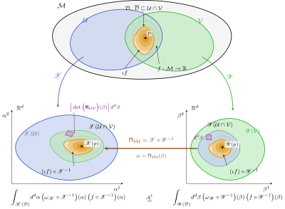
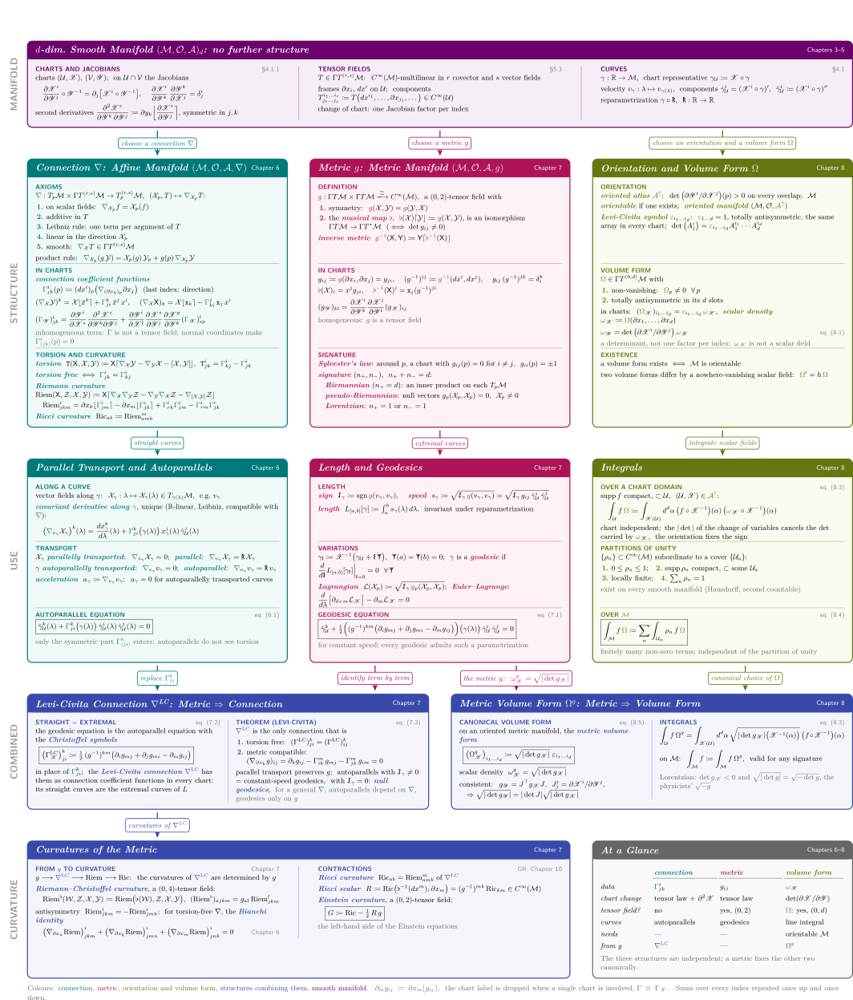

Chapter 8
Integrals
On \(\mathbb{R}^d\), a function is integrated against the volume element \(d^d\alpha\). On a manifold, a chart \((\mathcal{U}, \mathscr{X})\) turns \(f : \mathcal{M} \to \mathbb{R}\) into its chart representative \(f \circ \mathscr{X}^{-1}\) on \(\mathscr{X}(\mathcal{U}) \subseteq \mathbb{R}^d\), which can be integrated in the ordinary sense. The question is whether the result depends on the chart.
Let \((\mathcal{U}, \mathscr{X})\) and \((\mathcal{V}, \mathscr{Y})\) be charts, \(\mathcal{D} \subseteq \mathcal{U} \cap \mathcal{V}\), and let \(\iota : \mathcal{M} \to \mathbb{R}\), \(\iota(p) \coloneqq 1\) if \(p \in \mathcal{D}\) and \(0\) otherwise, be the indicator function of \(\mathcal{D}\). Its chart representative \(\iota \circ \mathscr{X}^{-1}\), extended by zero outside \(\mathscr{X}(\mathcal{U})\), equals \(1\) on \(\mathscr{X}(\mathcal{D})\) and \(0\) elsewhere on \(\mathbb{R}^d\). It turns the integral of the chart representative of \(f\) over \(\mathscr{X}(\mathcal{D})\) into one over all of \(\mathbb{R}^d\), which can then be rewritten in the other chart: \begin{align*} \int_{\mathscr{X}(\mathcal{D})} &d^d\alpha \, \big( f \circ \mathscr{X}^{-1} \big)(\alpha) \xlongrightarrow[\text{outside } \mathscr{X}(\mathcal{D})]{\text{extend by } 0 \text{ with } \iota \, ^{\href{#fn_Integrals_Fubini}{1}}} ... \\ ... = &\int_{\mathbb{R}^d} d^d\alpha \, \big( (\iota f) \circ \mathscr{X}^{-1} \big)(\alpha) \xlongrightarrow[d^d\alpha \, = \, d^d\beta \, |\det ( \textrm{\runic ᛞ}_{\mathcal{U}\mathcal{V}} )(\beta)|]{\text{change of variables} \, ^{\href{#fn_Integrals_Volume}{2}}} ... \\ ... = &\int_{\mathbb{R}^d} d^d\beta \, \Big| \det \big( \textrm{\runic ᛞ}_{\mathcal{U}\mathcal{V}} \big)(\beta) \Big| \, \big( (\iota f) \circ \mathscr{Y}^{-1} \big)(\beta) \xlongrightarrow[\text{out of } \mathscr{Y}(\mathcal{D})]{\iota \circ \mathscr{Y}^{-1} \, = \, 0} ... \\ ... = &\int_{\mathscr{Y}(\mathcal{D})} d^d\beta \, \underbrace{\Big| \det \big( \textrm{\runic ᛞ}_{\mathcal{U}\mathcal{V}} \big)(\beta) \Big|}_{\mathclap{\text{picked up by the change of chart}}} \, \big( f \circ \mathscr{Y}^{-1} \big)(\beta) . \end{align*} The indicator and \(f\) only become their representatives in the other chart, while the volume element picks up the factor \(\big| \det \big( \textrm{\runic ᛞ}_{\mathcal{U}\mathcal{V}} \big) \big|\). The integral of a chart representative therefore depends on the chart.
Goal: a notion of integration on \(\mathcal{M}\) that does not depend on the chart. Two structures achieve it:
a volume form, whose chart representative picks up \(\det \big( \textrm{\runic ᛞ}_{\mathcal{U}\mathcal{V}} \big)\) under a change of chart and can thus compensate the factor above;
an orientation, which makes these determinants positive, so that the compensation is exact, \(|\det| / \det = 1\).

For well-behaved integrands, Fubini’s theorem allows computing it as iterated integrals, \(\int_{-\infty}^{\infty} d\alpha^1 \cdots \int_{-\infty}^{\infty} d\alpha^d\), each running over the whole real line.
\(\textrm{\runic ᛖ}_{\mathcal{V}\mathcal{U}}\) is differentiable, so near \(\beta\) it acts as its Jacobian, \(\textrm{\runic ᛖ}_{\mathcal{V}\mathcal{U}}(\beta + h) = \textrm{\runic ᛖ}_{\mathcal{V}\mathcal{U}}(\beta) + \textrm{\runic ᛞ}_{\mathcal{U}\mathcal{V}}(\beta) \, h + o(|h|)\). A small box with edges \(h_k \hat{e}_k\) along the standard basis of \(\mathbb{R}^d\), of volume \(d^d\beta = h_1 \cdots h_d\), is thus mapped to the parallelepiped with edges \(h_k \, \textrm{\runic ᛞ}_{\mathcal{U}\mathcal{V}}(\beta) \, \hat{e}_k\), of volume \(\big| \det \big( \textrm{\runic ᛞ}_{\mathcal{U}\mathcal{V}} \big)(\beta) \big| \, h_1 \cdots h_d\). The determinant is the signed volume spanned by the columns of the matrix, and its sign, which only records a reversal of orientation, does not enter a volume. Summing over boxes (Riemann sums) gives the result; controlling the \(o(|h|)\) terms in this limit is the content of the change of variables theorem.
